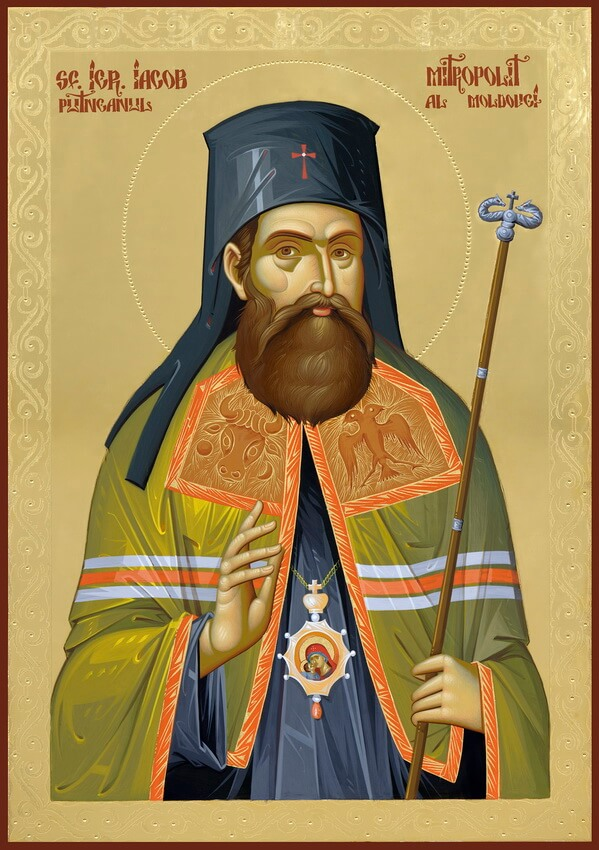
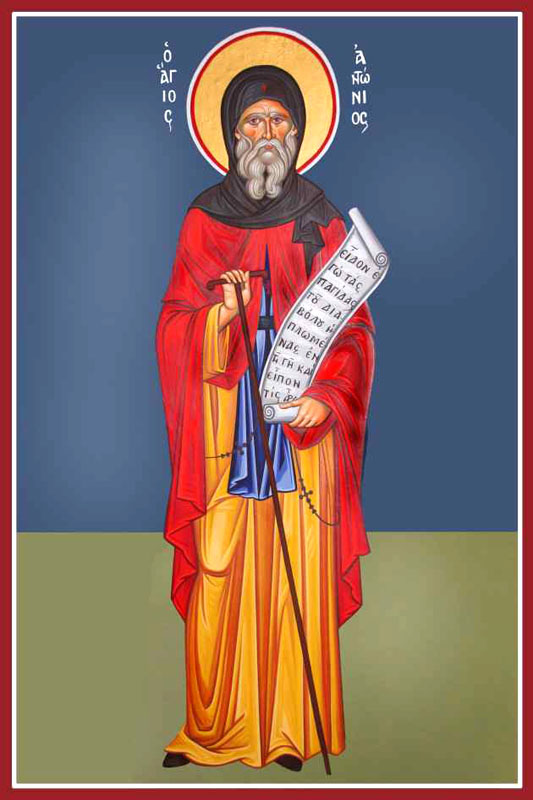

La Comunità Parrocchiale & La Fede
Parrocchia Ortodossa Romena Fossano/Mondovì, sotto la protezione di San Giacomo di Putna e Sant'Antonio il Grande
La Parrocchia & I Fedeli
La Parrocchia Ortodossa Romena Fossano/Mondovì è la casa spirituale e il focolare di preghiera per tutti i fedeli cristiani ortodossi e le loro famiglie residenti a Fossano, Mondovì, Savigliano, Saluzzo, Ceva e in tutta la provincia di Cuneo.
Le porte della nostra parrocchia sono aperte a chiunque cerchi Dio nella preghiera sincera, desideri accostarsi ai Santi Misteri o voglia conoscere la ricchezza liturgica e la luce spirituale dell'Oriente cristiano.
Padre Nicolae Pușcașu & La Cura Pastorale
La vita pastorale della comunità è guidata da Padre Nicolae Pușcașu, sacerdote e incaricato della parrocchia, dedito alla cura paterna di ogni anima e famiglia.
Padre Nicolae celebra con fedeltà le Sante Liturgie, riceve i fedeli per la Santa Confessione, impartisce le benedizioni e i sacramenti ed è costantemente disponibile per le necessità spirituali dei fedeli.
L'Attuale Sede & Il Progetto per una Chiesa Definitiva
Attualmente la parrocchia si riunisce per la preghiera comunitaria presso la sede di Via Craveri 93 nel centro di Fossano. È iniziato un cammino fondamentale: una raccolta fondi per individuare, allestire e restaurare la sede definitiva della chiesa per le comunità di Fossano, Mondovì e dintorni. Il luogo esatto sarà reso noto non appena il percorso di finanziamento sarà portato a compimento.
Anche in questa fase transitoria, il luogo di preghiera è custodito con profonda devozione: l'iconostasi separa e unisce il Santuario all'assemblea, e le sacre icone invitano al raccoglimento, alla pace del cuore e alla comunione fraterna.
Chiunque visiti la nostra chiesa è accolto con amore: un luogo dove accendere una candela, pregare nel silenzio e condividere la liturgia.


San Giacomo di Putna & Sant'Antonio il Grande
La nostra comunità è posta sotto la celeste intercessione di due venerabili santi: San Giacomo di Putna (15 maggio), metropolita di Moldavia, modello di carità pastorale e guida dei semplici; e Sant'Antonio il Grande / Abate (17 gennaio), fondatore del monachesimo cristiano e padre universale dell'ascesi e del discernimento interiore, celebrato sia nella Chiesa Ortodossa che in quella Cattolica.
I Pilastri della Nostra Parrocchia
Liturgia & Preghiera Continua
La Divina Liturgia domenicale e festiva, la confessione e la recita dei salmi costituiscono il fulcro spirituale della parrocchia.
Tradizione Ortodossa & Sante Icone
La fedeltà all'insegnamento dei Santi Padri della Chiesa, la venerazione delle sante icone e la celebrazione solenne delle grandi feste.
Fratellanza & Solidarietà Attiva
La cura per i bisognosi, l'accoglienza calorosa delle nuove famiglie, la catechesi dei bambini e il reciproco sostegno nella vita quotidiana.
La Parrocchia Ortodossa Romena Fossano/Mondovì opera in piena comunione canonica con la Diocesi Ortodossa Romena d'Italia.